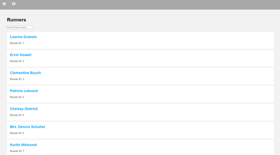
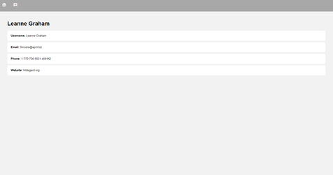
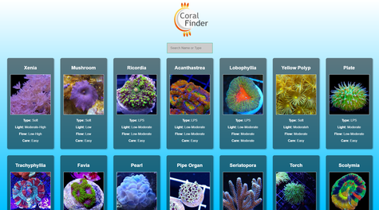
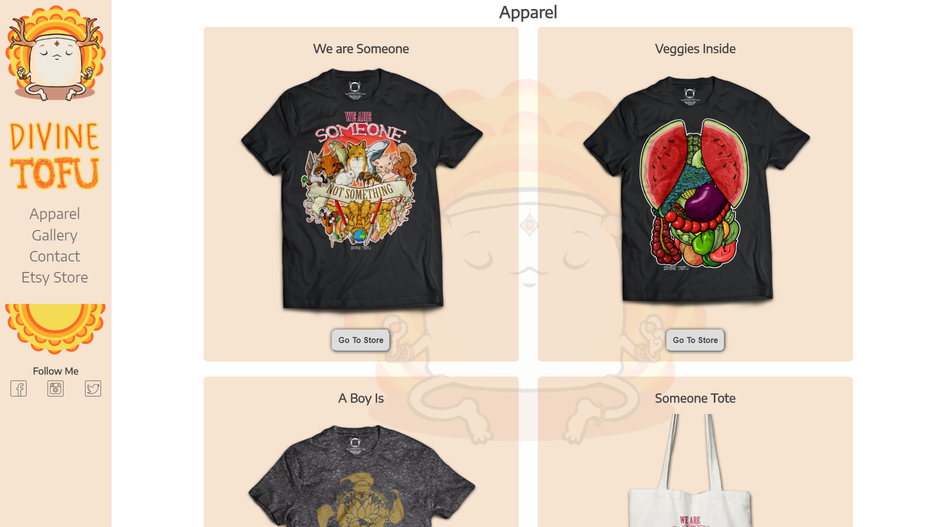
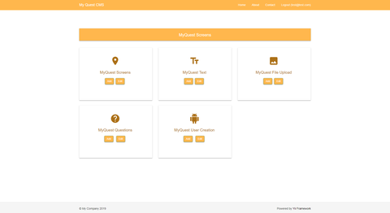
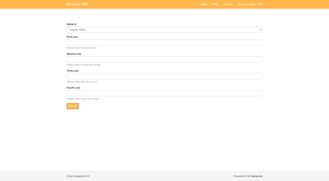

Portfolio


Hi, I'm Si and I love to make things.
This is a small portfolio of work I have produced since starting on my journey to become a Web Developer.
Recently, I have been becoming familiar with modern JS frameworks such as React and Angular 6.
As a result, I have developed two Single page applications to get going and I greatly look forward to working with these frameworks
more as they are very powerful and fairly intuitive to use.
Since the first year of my Studies I have busy improving my core development skills.
I have also been exposed to the fundementals of programming with OOP PHP programming using Yii2,
strongly typed JS with Typescript and Hybrid App Development.
I am currently looking for a industry placement to conclude my second year of studies, if you have any offer or would like a chat, please get in touch.
Angular Master Detail and Routing
 
My front end development module required me to investigate modern JS frameworks nd choose one to build a master detail application as part of my final assessment.
I worked with the supplied API to provide the data to the application.
In addtion to the brief I familiarized myself with Angulars router module, this was in order to display the information to the user without a page reload. I also implemented a custom pipe so a user could sort through the the list of runners. Overall using Angular made something that could have been complex relatively easy to achieve.
View Project Close ProjectClient Side Scripting

Before the start of the second year I wanted to investigate one of the more prominent JS frameworks, I chose React due to having a great deal of resources to support my learning experience.
I developed a small app which is a library of commonly kept corals from the marine aquarium trade, the data is supplied via JSON object which is sourced locally. By the end of this project I felt fairly familiar and confident with the set up and utilization of React, I especially appreciated the dynamic production of html at run time via templating. It almost felt like magic.
View Project Close ProjectResponsive Design

I built a responsive art site for an online Etsy retailer. The site was built from scratch with no frameworks as I saw this as an additional opportunity to cement some of my first years learning over the summer.
I implemented multiple break points and UI changes to accomodate multiple devices, a splash of jquery and lightbox for modal image transitions.
View Project Close ProjectServerside Development
 
I developed a small CRUD CMS application using the yii2 OOP PHP framework and phpMyAdmin, I developed and implemented the data model for the application via SQL, along with numerous custom functions.
The purpose of the CMS was to obtain data from administrators which would be used to update content on a university front end called myQuest.
I also had to implement role based access controls to ensure that superadmins and admins had varying CRUD access. Overall, I loved working with PHP once I got passed the basics of the syntax. I was also impressed by how quickly I could implement CRUD procedures with yii2 and can't wait to use it again!
Close Project